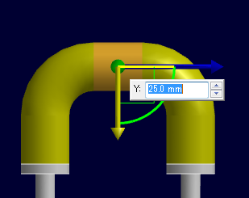

マニピュレーターを利用してパイプを移動します。

パイプを選択するとマニピュレータが表示されますので、ドラッグや数値入力によって移動します。
移動対象となる要素です。パイプだけでなく配管サポートソリッドも選択可能です。
「選択外の要素を固定」をチェックすると、マニピュレータを動かしても選択された要素以外は動きません。さらに「関連する寸法を無効化」チェックボックスが有効になり、これをチェックすると、選択された要素にたとえ寸法拘束が付加されていたとしても、一時的に拘束を無効にしてドラッグによる動きを適用します。
ドラッグ終了で操作を確定するかどうか設定します。
チェックOFFの場合、OKボタンで移動が確定します。
マニピュレータをドラッグした際の位置や角度の増分値は、オプションの「ツール」ページで設定しますが、コマンド使用中に異なる設定値を利用したい場合はここで増分値を変更します。